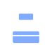

@@include('../src/pages/includes/header.html', {
type : 'sub-type',
gnb : true,
subDepth: true,
subArr : ['미라콤아이앤씨', '회사소개', '복리후생']
})
오랫동안 함께 하기 위해!
건강검진 지원
본인 뿐만 아니라 배우자의 건강검진도 회사에서 책임져요. 쫓기듯 검진 받지말고 검진일은 검진휴가쓰고 여유있게 집, 사업장 근처 연계 검진기관에서 편하게 검진받고 건강도 챙겨요.

의료비 지원
아파도 걱정마세요!
난임 지원
임직원 본인 및 배우자의 난임 시술비와
최대 1년, 3회 분할 사용이 가능한 난임
휴직을 지원해요.
심리상담실 지원
말 못할 고민이 있으신가요? 걱정마세요!
전문 상담사가 상시로 상주하고 있어 언제 어디서든 상담을 통해 내면의 안정을 찾을 수 있도록 지원해드려요.
사내진료실 지원
일 하다 몸이 아파도 걱정마세요!
강남삼성병원 소속 의료진이 상주해있어 편하고 안전하게 진료받을 수 있어요.
피트니스 지원
건강하게 업무를 할 수 있다면 더 좋겠죠! 호텔신라에서 운영하는 고급 피트니스센터에서 운동도 하고 일상의 활기도 찾으세요!
개인연금
100세 시대를 함께 준비해요! 미라콤인의 든든한 노후를 위해 회사에서 개인연금을 50% 지원해드려요.
임직원의 가족도 미라콤의 가족!
경조사 지원
기쁨은 나누면 배가 되고 슬픔은 나누면 반이 되죠! 축하 또는 조의의 마음을 표하기 위해 신속하게 경조화환, 장례지도사와 도우미, 경조물품, 경조금을 지원해요.
퇴직자 조사 지원 10년 이상 근속 후 퇴직 시 퇴직 후 10년간 본인, 배우자, 자녀 등의 조사를 지원해요.
출산선물 지원
미라콤 NEW 베이비의 탄생을 축하해요! 자녀수에 상관없이 출산시 출산선물을 지원해요.
학자금 지원 유치원생 자녀부터 대학생 자녀까지 회사에서 책임져요! 미라콤 자녀들이 안심하고 학업에 충실 할 수 있도록 자녀학자금을 지원해요.

초등학교입학선물 지원 일과 육아를 함께하는 임직원들을 응원하기 위해 초등학교 입학선물을 준비해드려요! 기뻐하는 자녀의 모습에 활력이 UP!
한 템포 쉬고 더 멀리가기 위해!

콘도 지원
휴가때 마다 숙소 혜약하느라 불편하셨죠? 보다 편안한 여가를 위해 전국 Hot spot에서 콘도를 회원가로 즐길 수 있는 기회를 제공해요.
캐리비안베이 시즌권 지원 활기차고 시원하게 그리고 저렴하게! 미라콤인의 리프레쉬를 위해 캐리비안베이 시즌권을 지원해요.
에버랜드 자유이용권 지원 꿈과 환상의 나라를 가족과 함께! 미라콤인의 리프레시를 위해 에버랜드 자유이용권을 지원해요.
장기근속 지원 열심히 일한 당신 떠나도 좋아요! 10, 15, 20, 25, 30, 35, 40년 5년마다 장기근속 휴가와 휴가비를 지원해요.
선택적복리후생 지원
자기개발도 하고 싶고 여행도 가고 싶고 건강도 챙기도 싶다구요? 걱정마세요!
On/Off Line에서 자유롭게 사용할 수 있도록 복리후생 포인트를 제공해요.

동호회 지원
하고싶었던 취미활동을 즐기며 몰랐던 회사동료를 알아가는 시간, 다양한 동호회를 지원해요.
함께 성장해요!
교육 지원
업무 뿐 아니라 다양한 분야에서 역량을 쌓고 싶으신가요? 걱정마세요!
IT, 어학, 경영 등 많은 분야에서 전문가가 될 수 있도록 지원해요!
자격증 취득 지원
어제보다 한단계 더 성장하는 여러분을 응원해요! 빠르게 변화하는 IT기술 및 트렌드를 익히고, 역량을 쌓을 수 있도록 자격취득/갱신시 비용을 지원해요.
멘토·멘티제도 지원
직장동료를 넘어 인생 멘토로! 신규입사자분들의 회사 적응을 돕고자 멘토·멘티제도를 운영해요.
몰입할 수 있는 업무 환경을 위해!
자율출퇴근제 운영
일과 여가시간 모두 중요하죠. 계획적인 하루를 보내기 위해 출/퇴근시간을 자율적으로 조절할 수 있어요!
주거안정 지원
요즘 집값 만만치 않죠. 생활 안정 보장을 위해 충청이남 지방에 근무 및 거주하는 미라콤인을 위해 대출 이자를 지원해 드려요.
부임여비 지원
근무지가 변경 되었다구요? 미라콤은 근무지 근처로 거주지 이전하실 경우에 부담을 덜어드리기 위해 일당 및 교통비 등을 지원해드려요.
홈커밍비 지원
일은 해야하고 가족은 보고 싶고…
사내식당 지원
직장생활에 빠질 수 없는 즐거운 점심시간! 전문 영양사가 선별해서 더 맛있고 더 건강하게 즐길 수 있어요! 중식뿐아니라 조식, 석식까지 든든하게 챙겨요!
@@include('./pages/includes/footer.html')
@@include('../src/pages/includes/scriptImport.html', {pageMain : false,})